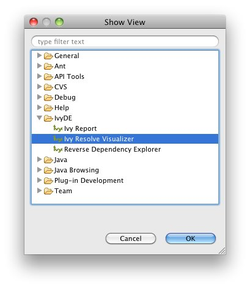
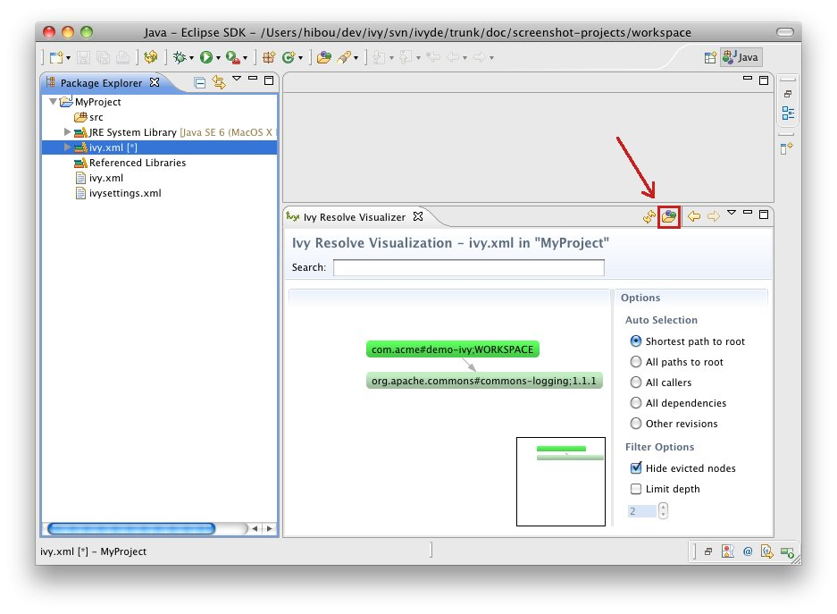

Resolve Visualizer
The resolve vizulizer show the graph of the dependencies of a project.
Open the view
To open it, you should open the corresponding view: in the "Window" menu, open the "Show View" submenu and select "Other..."; the view "Ivy Resolve Visualizer" should be found in the "IvyDE" category.

Show a project dependencies
Once the view is open, click on the button to select a container and see the result:
